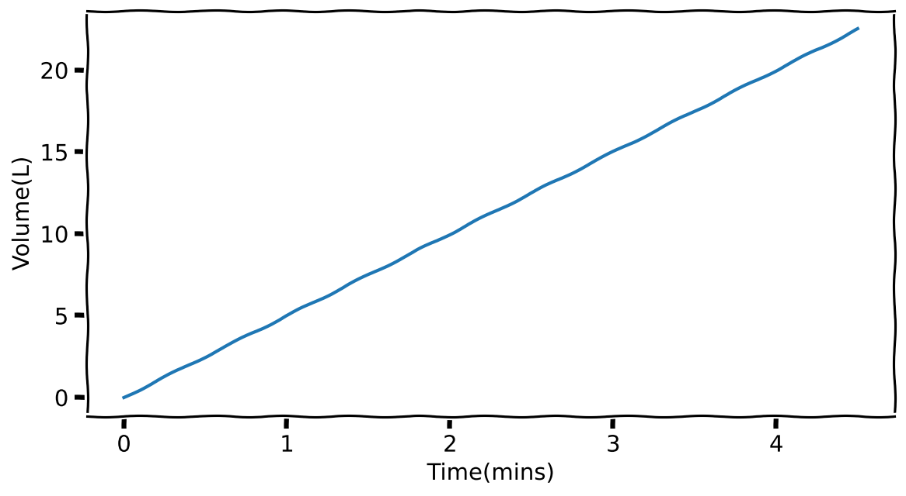
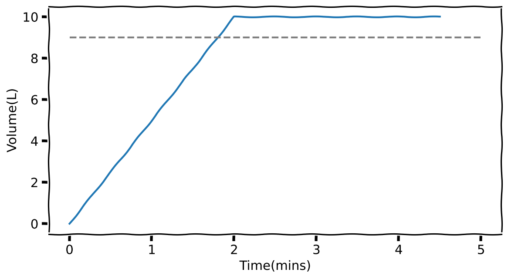
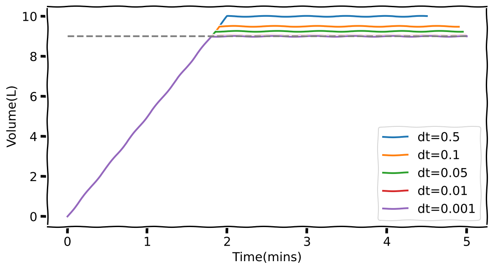
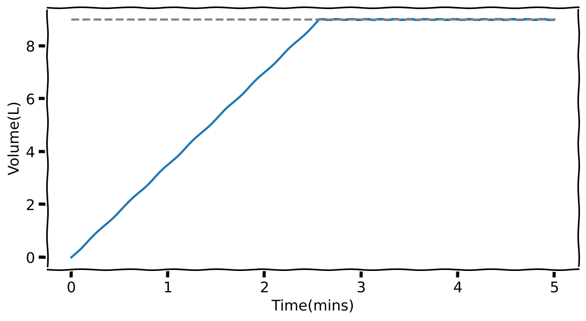
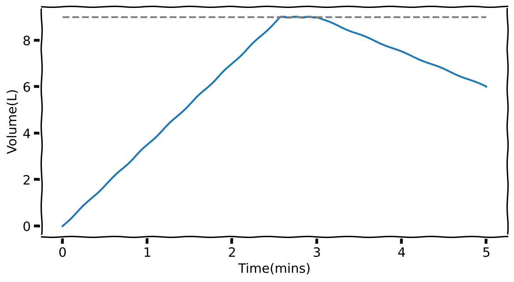
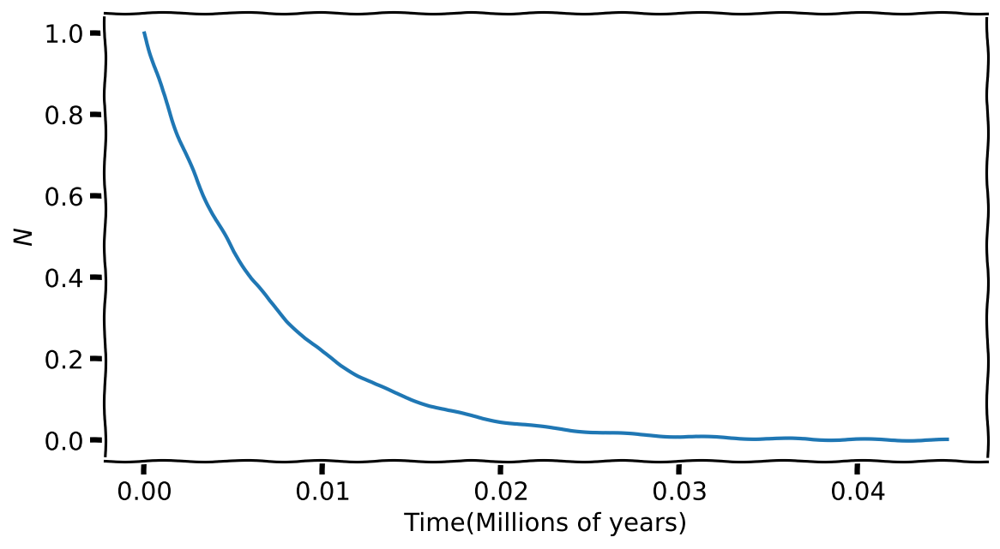

max_time = 5 # Maximum time (mins)
dt = .5 # Time step (mins)
rate = 5 # Rate (L/min)
all_volume = [] # To keep track of all volumes
volume = 0 # Starting volume
all_time = np.arange(start=0, stop=max_time, step=dt)
for time in all_time:
all_volume.append(volume) # Record volume
dV = rate * dt # Calculate change in volume
volume += dV # Update the new volume
# Because we can...
plt.plot(all_time, all_volume)
plt.ylabel('Volume(L)')
plt.xlabel('Time(mins)')Numerical Solutions (Need)

What to expect in this chapter
One of science’s triumphs is its ability to mathematically model the world around us. In addition to giving us insights into how the various systems work, it also provides us with the ability to predict what can happen. But unfortunately, we cannot derive the solutions to the equations related to most natural systems in closed form. Instead, we have to use approximate techniques to get numerical solutions.
Examples of dynamical systems can be as diverse as how planets move, viruses spread, or populations rise and fall. We can use many numerical strategies to understand or model dynamic systems. This part will focus on simple techniques that involve modelling and solving differential equations.
1 A Bucket of water
1.1 Getting a feel
Let us start with a simple system consisting of a bucket filled with a faucet. Let’s say the tap provides water at a rate of 5 L/mins. I can get a feel for the dynamics of this system by creating a table like this.
| # | Time Step (\(\Delta t\)) |
Elasped Time (\(t\)) |
Rate (\(R\)) |
Change in Volume (\(\Delta V\)) |
Total Volume (\(V\)) |
|---|---|---|---|---|---|
| 0 | .5 mins | 0.0 mins | 5 L/min | 0.00 | 0.0 L |
| 1 | .5 mins | 0.5 mins | 5 L/min | 2.5 L | 2.5 L |
| 2 | .5 mins | 1.0 mins | 5 L/min | 2.5 L | 5.0 L |
| 3 | .5 mins | 1.5 mins | 5 L/min | 2.5 L | 7.5 L |
| 4 | .5 mins | 2.0 mins | 5 L/min | 2.5 L | 10.0 L |
| 5 | .5 mins | 2.5 mins | 5 L/min | 2.5 L | 12.5 L |
\(R\) is the rate and \(\Delta V\) is the change in volume that corresponds to a time step of \(\Delta V\). I.e.
\[ \Delta V = R \Delta t \]
Let me do all this in Python.

You might think I have overly complicated something simple that can be done in a spreadsheet. However, once I have this basic structure in place, I can start having fun imagining other realities.
1.2 An overflowing bucket
Let’s imagine that our bucket has a maximum volume of 9 L. We can impose this condition with a simple if statement.
max_time = 5 # Maximum time (mins)
dt = .5 # Time step (mins)
rate = 5 # Rate (L/min)
bucket_capacity = 9 # L
all_volume = [] # To keep track of all volumes
volume = 0 # Starting volume
all_time = np.arange(start=0, stop=max_time, step=dt)
for time in all_time:
all_volume.append(volume)
dV = rate * dt
if volume <= bucket_capacity:
volume += dV # Update the new volume
plt.plot(all_time, all_volume)
plt.ylabel('Volume(L)')
plt.xlabel('Time(mins)')
plt.hlines(bucket_capacity, 0, max_time, colors='grey', ls='dashed')
Oh no, the bucket still seems to fill beyond \(9\) L before it stops increasing. The problem here is that my timestep is too large. So let’s make it smaller. Since I don’t know what will work best, I will try a few with a for loop.
max_time = 5 # Maximum time (mins)
dt = .5 # Time step (mins)
rate = 5 # Rate (L/min)
bucket_capacity = 9 # L
for dt in [0.5, 0.1, 0.05, 0.01, 0.001]:
all_volume = [] # To keep track of all volumes
volume = 0 # Starting volume
all_time = np.arange(start=0, stop=max_time, step=dt)
for time in all_time:
all_volume.append(volume)
dV = rate * dt
if volume <= bucket_capacity:
volume += dV
plt.plot(all_time, all_volume, label=f'dt={dt}')
plt.ylabel('Volume(L)')
plt.xlabel('Time(mins)')
plt.hlines(bucket_capacity, 0, max_time, colors='grey', ls='dashed')
plt.legend()I hope you are following what I have done. Since I want to change dt I have pushed everything that depends on it under the for loop. The way I initially set up the code with variables defined at the top and reused elsewhere makes it easy to make quick adjustments. If I run this code, I end up with:

Looks like a timestep of 0.01 or 0.001 works best. I am going to pick 0.01 because this means the for loop runs fewer times.
1.3 A leaky bucket
Now, let’s imagine a hole in the bucket is causing it to leak at a rate of 1.5 L/min.
max_time = 5 # Maximum time (mins)
dt = .001 # Time step (mins)
rate = 5 # Filling rate (L/min)
leak_rate = 1.5 # L/min
bucket_capacity = 9 # L
all_volume = [] # To keep track of all volumes
volume = 0 # Starting volume
all_time = np.arange(start=0, stop=max_time, step=dt)
for time in all_time:
all_volume.append(volume)
dV = rate * dt
leak_volume = leak_rate * dt
volume -= leak_volume
if volume <= bucket_capacity:
volume += dV # Update the new volume
plt.plot(all_time, all_volume)
plt.ylabel('Volume(L)')
plt.xlabel('Time(mins)')
plt.hlines(bucket_capacity, 0, max_time, colors='grey', ls='dashed')
Notice how it now takes longer for the bucket to fill up. But, even then, once it is filled, the inflow is sufficient to offset the leak and keep the bucket full.
1.4 Let’s turn off the tap
What will happen if we turn off the tap after 3 mins? I can impose this by simply modifying the if condition!
tap_off_time = 3 # When the tap goes off
max_time = 5 # Maximum time (mins)
dt = .001 # Time step (mins)
rate = 5 # Filling rate (L/min)
leak_rate = 1.5 # L/min
bucket_capacity = 9 # L
all_volume = [] # To keep track of all volumes
volume = 0 # Starting volume
all_time = np.arange(start=0, stop=max_time, step=dt)
for time in all_time:
all_volume.append(volume)
dV = rate * dt
leak_volume = leak_rate * dt
volume -= leak_volume
if (volume <= bucket_capacity) and (time < tap_off_time):
volume += dV
plt.plot(all_time, all_volume)
plt.ylabel('Volume(L)')
plt.xlabel('Time(mins)')
plt.hlines(bucket_capacity, 0, max_time, colors='grey', ls='dashed')
Using while
Before we move on let me show you how to use a while statement to run the same simulation. I prefer while for such cases because all variables (e.g. time and volume) are treated equally. Let me show you what I mean.
tap_off_time = 3 # When the tap goes off
max_time = 5 # Maximum time (mins)
dt = .001 # Time step (mins)
rate = 5 # Filling rate (L/min)
leak_rate = 1.5 # L/min
bucket_capacity = 9 # L
all_volume = [] # To keep track of all volumes
all_time = [] # To keep track of all times
volume = 0 # Starting volume
time = 0
while time <= max_time:
all_time.append(time)
all_volume.append(volume)
dV = rate * dt
leak_volume = leak_rate * dt
volume -= leak_volume
if (volume <= bucket_capacity) and (time < tap_off_time):
volume += dV
time += dt
plt.plot(all_time, all_volume)
plt.ylabel('Volume(L)')
plt.xlabel('Time(mins)')
plt.hlines(bucket_capacity, 0, max_time, colors='grey', ls='dashed')1.5 A quick summary
We started with a bucket and slowly added more details to our story. I hope you noticed how little our code had to be altered to add these details. Also, you can easily see the ‘story’ just by looking at the code. Here you have a glimpse of the power of programming (with Python) over other methods (such as spreadsheets): simplicity of syntax, transparency of the processes and ease of making changes.
I also like to point out that irrespective of how complicated the system or problem is, the strategy you need to adopt will be the same, simple one:
- Establish a relationship that connects the changes of the variables.
- Pick a starting value
- Take a step, and calculate the changes.
- Update the variables
- Keep on going until you have the desired number of points.
- If you want to improve accuracy, take smaller steps.
I will remind you of this again after the next example.
1.6 We just solved a differential equation!
The example with the bucket is actually one related to a simple differential equation. Namely:
\[ \dfrac{dV}{dt} = R \]
Most mathematical equations are succinct ways of telling a story. For example, the above says that how fast the volume (\(V\)) changes as time passes equals a constant \(R\). More accurately, the symbol on the LHS reads as ‘rate of change of \(V\) with respect to \(t\)’.
We can approximate this relationship as the following fraction:
\[ \dfrac{\Delta V}{\Delta t} \approx \dfrac{dV}{dt} = R \]
As you noticed earlier, the approximation becomes more accurate the smaller we make \(\Delta t\).
Rearranging the above equation, we end up with:
\[ \Delta V = R \Delta t \]
Which is where we started everything about the bucket.
2 Simulating Radioactivity
2.1 Introduction
Let’s solve the differential equation related to radioactive decay in this section. The experimentally observed mathematical relationship that governs the decay of a sample of radioactive material is given by:
\[ \dfrac{dN}{dt}=- \lambda N \]
\(N\) is the number of radioactive nuclei and \(\lambda\) is a characteristic number (called the ‘decay constant’) of the radioactive species. For example, \(\lambda = 142\) per million year for \(^{87}\)Rb.
2.2 Approximating the differential equation
Let’s follow our recipe and recast the differential equation in an approximate form:
\[ \begin{align*} \dfrac{\Delta N}{ \Delta t}&\approx- \lambda N \\[10pt] \Rightarrow \Delta N &\approx-\lambda N \Delta t \end{align*} \]
Getting a feel
| Step | Time | N(t) \((\times 10^9)\) | \(\Delta t\) (million years) | \(\Delta N\) (\(\times10^9\)) |
|---|---|---|---|---|
| 0 | \(t_0 = 0\) | 1 | \(0.001\) | \(-0.142\) |
| 1 | \(t_1 = t_0 + \Delta t = 0.001\) | \(?\) | \(0.001\) | \(?\) |
| 2 | \(t_2 = t_1 + \Delta t =?\) | \(?\) | \(0.001\) | \(?\) |
| 3 | \(t_3 = t_2 + \Delta t =?\) | \(?\) | \(0.001\) | \(?\) |
| 4 | \(t_4 = t_3 + \Delta t =?\) | \(?\) | \(0.001\) | \(?\) |
| 5 | \(t_5 = t_4 + \Delta t =?\) | \(?\) | \(0.001\) | \(?\) |
| 6 | \(t_6 = t_5 + \Delta t =?\) | \(?\) | \(0.001\) | \(?\) |
We will re-create this data using Python in a bit. But, for the moment, if you are still not yet very confident about how we solve differential equations, try to complete the \(?\) of the table by hand.
2.3 Let’s write some code
decay_constant = 142 # For 85 Rb (per Myr)
stop_fraction = 1E-3 # stop when the sample has shrunk to
# this fraction of the starting value
N0 = 1 # Starting value of N (in billions of atoms)
dt = .001
time, N = 0, N0 # Starting values
all_N, all_time = [], []
while True:
all_time.append(time)
all_N.append(N)
dN = -decay_constant*N*dt
N += dN
if N < N0*stop_fraction:
break
time += dt
plt.plot(all_time, all_N)
plt.ylabel('$N$')
plt.xlabel('Time(Millions of years)')
Some things to note about the code
I want to draw your attention to how I am using a True condition with the while loop. So, it will run until the end of The Universe until I break out on my own. To break out, I check if the \(N\) has been reduced to a negligible amount, which I have defined using stop_fraction.
2.4 A quick summary
Yet, again, I draw your attention to the strategy we use to solve the differential equation.
- Rewrite the equation in an approximate form that connects the changes of one variable to another. i.e. \[ \dfrac{dN}{dt}=- \lambda N \Rightarrow \Delta N \approx - \lambda N \Delta t \]
- Pick starting values for the variables.
- Step the control variable (time in the previous case) and calculate the corresponding changes in the other variables.
- Update the variables
- Repeat until you reach the desired end.
- Make the step size smaller if you want greater accuracy.
This method you have been using is named the Euler Method (pronounced o-e-le).
Remember
Remember that the easiest (although not necessarily the best) way to solve a differential equation is using the Euler method.